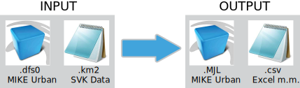

Long Term Statistics toolbox er et værktøj til at udvikle DHI MIKE Urban LTS-filer (Long Term Statistics) igennem ArcGIS.
Værktøjet virker til alle versioner af ArcGIS og kan anvende både .dfs0-filer fra MIKE Urban eller .km2-filer fra Spildevandskomitéens regnmålersystem. Den kan skrive LTS-filer til direkte anvendelse i langtidssimuleringer igennem MIKE Urban eller .csv-filer.
Hvorfor vælge værktøjet i stedet for modulet indbygget i MIKE Urban?:
Værktøjet tilbyder en bedre og mere intuitiv udvælgelse af regnhændelser til anvendelse i langtidssimuleringer. Værktøjet tilbyder bl.a. følgende funktioner til udvælgelse af regnhændelser:Hvordan bruges værktøjet?:
Værktøjet kan hentes gratis nederst på siden. Efter udpakning kan Long Term Statistics.pyt hentes ind i ArcGIS Toolbox, hvorved interfacet, som ses ovenover, kan benyttes. Værktøjet kan også åbnes og anvendes i ArcGIS Catalogue.
Download Long Term Statistics.pyt her.
Brugervejledning (på engelsk)